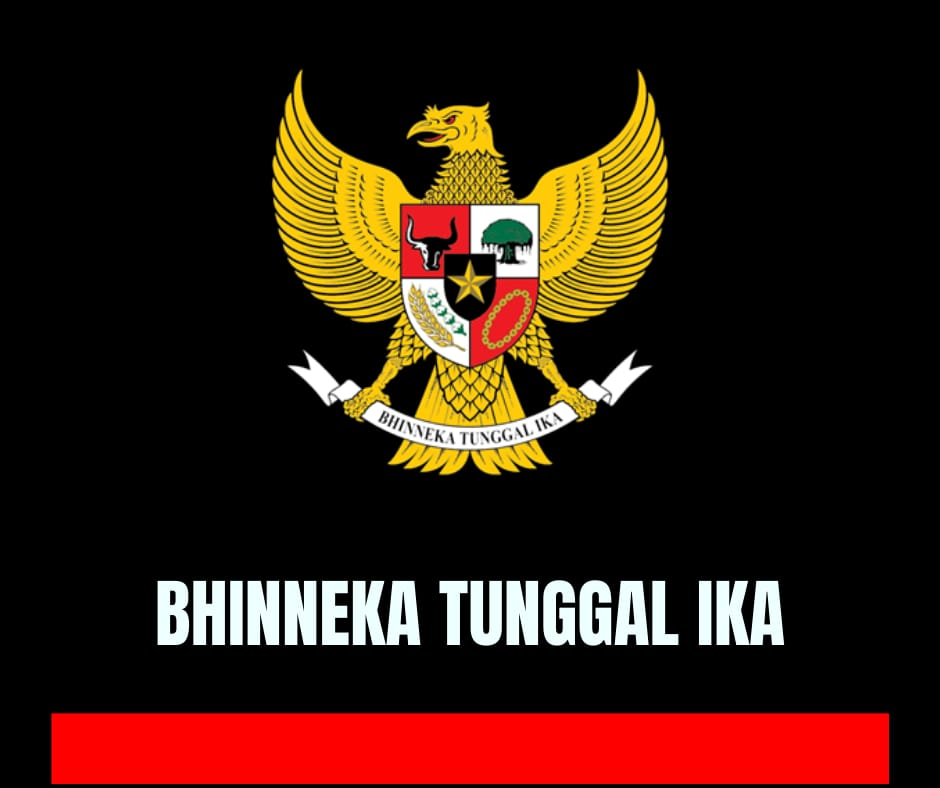

Beranda
Selamat datang di Website kami, web ini dibuat dengan tujuan mengenalkan sekilas tentang Indonesia dan menjelaskan pentingnya memiliki kebhinekaan pada setiap individu di masa sekarang.
Petunjuk penggunaan website ini:
- Disarankan menggunakan tampilan landscape untuk mempermudah dan untuk mendapat tampilan yang lebih baik.
- Menu di sebelah kiri menampilkan navigasi website.
- Slide show di atas menampilkan gambar-gambar yang berhubungan dengan tema kami.
- Bagian sekilas tentang Indonesia menjelaskan sekilas tentang Indonesia, mulai dari bahasa, budaya, sosial-politik, hingga kebudayaan.
- Bagian pentingnya kebhinekaan di masa kini menjelaskan pentingnya kebhinekaan pada setiap individu di masa sekarang.
- Bagian wawancara menyediakan wawancara dengan para siswa dan guru untuk mengetahui lebih dalam tentang kebhinekaan Indonesia.
- Bagian tentang kami menampilkan informasi tentang kami, seperti kontak, alamat, serta lain-lain.
- Bagian dokumentasi menampilkan beberapa dokumentasi kelompok kami selama pengerjaan projek ini.
Semoga website ini dapat membantu Anda memahami lebih dalam tentang Indonesia dan pentingnya kebhinekaan di masa kini.
Sekilas Tentang Indonesia
Halaman ini menjelaskan tentang berbagai aspek kebudayaan Indonesia, mulai dari bahasa hingga kesenian, yang membentuk identitas bangsa Indonesia. Setiap elemen tersebut mencerminkan kekayaan budaya yang beragam dan dinamis, menciptakan jalinan kuat antara masyarakat dengan tradisi yang telah ada selama berabad-abad.
Dalam setiap masyarakat di dunia, terdapat unsur-unsur kebudayaan yang bersifat universal dan dapat ditemukan di berbagai penjuru bumi, terlepas dari perbedaan geografis atau etnis. Menurut antropolog Koentjaraningrat, kebudayaan manusia terdiri dari tujuh unsur pokok yang ada di setiap bangsa. Ketujuh unsur tersebut mencakup sistem bahasa, sistem pengetahuan, sistem sosial, sistem peralatan hidup dan teknologi, sistem mata pencaharian, sistem religi, dan kesenian. Masing-masing unsur ini berperan penting dalam membentuk identitas dan kehidupan sehari-hari suatu masyarakat, menciptakan keanekaragaman budaya yang kaya di seluruh dunia. Halaman ini akan membahas secara rinci tujuh unsur kebudayaan tersebut dalam konteks Indonesia.
Sistem Bahasa
Bahasa merupakan alat komunikasi utama di Indonesia, dengan Bahasa Indonesia sebagai bahasa resmi dan pemersatu bangsa. Selain itu, terdapat sekitar 700 bahasa daerah yang masih digunakan, seperti Bahasa Jawa, Sunda, dan Bugis. Bahasa mencerminkan identitas daerah dan menjadi salah satu kekayaan budaya yang tak ternilai. Contohnya, Bahasa Jawa dikenal dengan tingkatan bahasanya seperti Ngoko (kasual) dan Krama (halus), yang mencerminkan stratifikasi sosial dan etika dalam berkomunikasi.
Sistem Pengetahuan
Sistem pengetahuan di Indonesia sangat erat kaitannya dengan alam dan lingkungan. Banyak masyarakat tradisional, seperti suku Dayak dan Baduy, memiliki pengetahuan lokal mengenai cara bercocok tanam, pengobatan alami, dan pola cuaca yang diwariskan turun-temurun. Di era modern, Indonesia juga berkembang dalam bidang sains dan teknologi, dengan universitas dan lembaga penelitian yang terus mendorong inovasi, misalnya LIPI (Lembaga Ilmu Pengetahuan Indonesia) yang berperan penting dalam riset ilmiah.
Sistem Sosial
Sistem sosial di Indonesia didasarkan pada struktur keluarga dan komunitas. Masyarakat Indonesia memiliki sistem kekeluargaan yang erat, baik dalam keluarga inti maupun keluarga besar. Gotong royong, yang berarti kerja sama dan saling membantu, merupakan nilai utama dalam sistem sosial ini. Contoh penerapan gotong royong terlihat dalam acara pembangunan rumah atau perayaan adat di pedesaan, di mana seluruh warga terlibat untuk membantu satu sama lain.
Sistem Peralatan Hidup Dan Teknologi
Peralatan hidup dan teknologi di Indonesia mencerminkan kemampuan adaptasi masyarakat terhadap lingkungan alam dan kemajuan zaman. Misalnya, rumah adat tradisional seperti rumah gadang di Sumatera Barat atau rumah joglo di Jawa Tengah dibangun dengan memanfaatkan material lokal dan desain yang sesuai dengan kondisi iklim tropis. Di sisi lain, Indonesia kini juga berkembang dalam teknologi modern, seperti pemanfaatan teknologi seluler dan infrastruktur internet yang semakin meluas di seluruh nusantara.
Sistem Mata Pencaharian Hidup
Mata pencaharian masyarakat Indonesia sangat beragam, bergantung pada letak geografis dan kondisi alam. Sebagian besar penduduk di daerah pedesaan bekerja sebagai petani, nelayan, atau pengrajin, sementara di perkotaan banyak yang bekerja di sektor industri, jasa, dan perdagangan. Contohnya, petani di Pulau Bali mempraktikkan sistem subak, sebuah metode irigasi tradisional yang melibatkan kerja sama sosial untuk mengatur pembagian air di sawah.
Sistem Religi
Indonesia dikenal sebagai negara dengan keberagaman agama yang diakui secara resmi, yaitu Islam, Kristen, Katolik, Hindu, Buddha, dan Konghucu. Mayoritas penduduk Indonesia memeluk agama Islam, tetapi masyarakat dari agama lain hidup berdampingan dengan harmonis. Religi juga mempengaruhi berbagai aspek kehidupan sehari-hari dan budaya, seperti upacara keagamaan, misalnya Nyepi di Bali untuk penganut Hindu atau Idul Fitri untuk umat Islam, yang menjadi bagian integral dari tradisi masyarakat.
Kesenian
Kesenian Indonesia mencakup berbagai bentuk ekspresi, mulai dari seni tari, musik, hingga seni rupa. Misalnya, tari Kecak di Bali dan tari Saman dari Aceh sangat terkenal hingga ke mancanegara. Dalam seni musik, alat musik tradisional seperti gamelan di Jawa dan Bali, serta angklung dari Sunda, merupakan representasi penting dari kekayaan musik Indonesia. Seni rupa juga berkembang dalam bentuk batik, yang diakui oleh UNESCO sebagai Warisan Budaya Tak Benda.
Pentingnya Kebhinekaan di Masa Modern
">Membangun Masyarakat yang Kuat dan Inklusif
Di tengah arus globalisasi yang semakin deras, kebhinekaan atau keberagaman telah menjadi realitas yang tak terelakkan dalam kehidupan masyarakat modern. Baik di Indonesia maupun di berbagai belahan dunia lainnya, keberagaman telah menjadi bagian integral dari dinamika sosial, ekonomi, dan budaya. Namun, seberapa pentingkah kebhinekaan ini bagi perkembangan masyarakat kita? Mari kita telaah lebih lanjut.
Memperkaya Perspektif dan Mendorong Inovasi
Salah satu manfaat utama dari kebhinekaan adalah kemampuannya untuk memperluas cakrawala pemikiran kita. Ketika kita berinteraksi dengan individu dari berbagai latar belakang, kita dihadapkan pada beragam sudut pandang dan pengalaman hidup yang berbeda. Hal ini tidak hanya memperkaya wawasan pribadi, tetapi juga menjadi katalis bagi munculnya ide-ide inovatif dalam berbagai bidang.
Dalam dunia bisnis, misalnya, tim yang beragam seringkali mampu menghasilkan solusi yang lebih kreatif dan efektif untuk mengatasi tantangan pasar. Sementara dalam ranah seni dan budaya, perpaduan berbagai tradisi dan perspektif dapat melahirkan bentuk-bentuk ekspresi baru yang menarik dan unik.
Membangun Toleransi dan Ketahanan Sosial
Hidup berdampingan dengan keberagaman juga memiliki dampak positif terhadap pembentukan karakter sosial masyarakat. Interaksi sehari-hari dengan orang-orang yang berbeda mendorong kita untuk mengembangkan rasa empati dan toleransi yang lebih besar. Sikap ini pada gilirannya akan menciptakan lingkungan sosial yang lebih inklusif dan harmonis.
Lebih jauh lagi, masyarakat yang terbiasa dengan keberagaman cenderung lebih tangguh dalam menghadapi berbagai krisis dan perubahan. Keragaman perspektif dan keterampilan membuat suatu komunitas lebih adaptif dan responsif terhadap tantangan yang muncul, baik itu dalam skala lokal maupun global.
Mendorong Pertumbuhan Ekonomi dan Daya Saing Global
Dalam konteks ekonomi global, kebhinekaan telah terbukti menjadi aset yang berharga. Perusahaan dan negara yang mampu memanfaatkan talenta dari berbagai latar belakang cenderung lebih inovatif dan sukses di pasar internasional. Keberagaman juga membuka peluang bisnis baru dengan adanya kebutuhan dan preferensi konsumen yang semakin beragam. Selain itu, kemampuan untuk berkolaborasi dengan individu dari berbagai latar belakang budaya menjadi keterampilan yang semakin penting di era dimana banyak tantangan bersifat lintas batas, seperti perubahan iklim atau pandemik global.
Memperkuat Fondasi Demokrasi dan Mencegah Konflik
Kebhinekaan juga memiliki peran penting dalam memperkuat sistem demokrasi. Masyarakat yang menghargai keberagaman cenderung lebih terbuka terhadap ide-ide baru dan lebih siap berpartisipasi dalam proses demokrasi. Prinsip-prinsip seperti kesetaraan, kebebasan berekspresi, dan partisipasi aktif warga negara semuanya diperkuat oleh adanya keberagaman dalam masyarakat. Lebih lanjut, pemahaman dan penghargaan terhadap perbedaan dapat menjadi alat yang efektif dalam mencegah konflik sosial. Dialog antar kelompok yang berbeda membantu membangun jembatan pemahaman dan mengurangi potensi gesekan yang sering muncul akibat stereotip dan prasangka.
Penutup: Merawat Kebhinekaan untuk Masa Depan yang Lebih Baik
Mengingat berbagai manfaat kebhinekaan yang telah kita bahas, jelaslah bahwa merawat dan mempromosikan keberagaman bukan hanya pilihan, tetapi keharusan bagi masyarakat modern. Ini bisa dimulai dari lingkup terkecil seperti keluarga dan komunitas, hingga level yang lebih luas seperti kebijakan nasional dan hubungan internasional. Langkah-langkah konkret seperti menerapkan pendidikan multikultural, mendorong dialog antar kelompok, dan mengimplementasikan kebijakan yang mendukung kesetaraan dan inklusivitas, semuanya berperan penting dalam memperkuat kebhinekaan dalam masyarakat. Dengan terus memupuk dan menghargai kebhinekaan, kita tidak hanya membangun masyarakat yang lebih kuat dan inklusif, tetapi juga meletakkan fondasi yang kokoh untuk menghadapi tantangan global di masa depan. Mari bersama-sama merayakan dan memanfaatkan kekayaan keberagaman kita untuk membangun dunia yang lebih baik bagi generasi mendatang.
Wawancara dengan Murid
Kami telah melakukan beberapa wawancara dengan berbagai narasumber yang pastinya dapat membantu kalian untuk memahami lebih dalam tentang kebhinekaan.

Silahkan klik gambar di atas untuk melihat video wawancara yang telah dibuat dengan sepenuh hati oleh anggota kelompok kami.
Tentang Kami
Siapa Kami?
Kami adalah kelompok murid dari kelas 10 yang menjalankan Proyek Penguatan Profil Pelajar Pancasila (P5). Proyek ini bertujuan untuk memperkuat karakter kami sebagai pelajar yang berlandaskan nilai-nilai Pancasila, sekaligus mengembangkan keterampilan abad 21 seperti berpikir kritis, kolaborasi, dan inovasi. Kami bekerja sama sebagai tim dan memiliki visi yang sama: berkontribusi untuk kebaikan sekolah dan masyarakat melalui tindakan nyata.
Apa yang Kami Lakukan?
Dalam proyek ini, kami fokus pada tema kebhinekaan, yang ditetapkan berdasarkan tantangan dan kebutuhan yang ada di lingkungan sekolah atau masyarakat. Dengan bimbingan guru(Bu Eka), kami menjalankan P5 ini dengan baik dan terarah.
Melalui proses ini, kami belajar bagaimana mengidentifikasi masalah, dan menjalani program dengan penuh tanggung jawab dan dedikasi.
Bagaimana Proyek Ini Dimulai?
Proyek P5 ini dimulai pada awal tahun ajaran 2024/2025 ketika sekolah kami memilih murid-murid secara acak untuk berkolaborasi dan berinovasi dalam menyelesaikan masalah. Setelah terbentuknya kelompok, kami mengadakan beberapa pertemuan untuk mendiskusikan tema dan fokus proyek kami.
Langkah awal kami adalah melakukan diskusi bersama untuk menentukan fokus kami. Setelah menentukan fokus proyek, kami kemudian menyusun rencana dan mulai bekerja bersama-sama untuk mewujudkan hasil yang kami harapkan.
Apa Saja yang Telah Kami Capai?
Sejauh ini, kami telah berhasil menghasilkan dua produk, termasuk website ini. Kegiatan kami tidak hanya memberikan manfaat bagi orang lain, tetapi juga membantu kami mengasah keterampilan dan pengetahuan di luar materi akademis.
Kami merasa bangga dengan apa yang telah kami capai sejauh ini, dan kami berharap bahwa hasil kerja kami dapat memberikan dampak positif yang luas.
Tim Proyek Kami
Tim kami terdiri dari 4 murid dengan latar belakang dan minat yang berbeda beda. kami berasal dari berbagai kelas dan memiliki minat yang beragam, kami disatukan oleh keinginan bersama untuk membuat perbedaan. Tim ini dipimpin oleh [Nama Ketua Kelompok], yang bertanggung jawab mengoordinasikan tugas-tugas, dan memastikan setiap anggota berperan aktif dalam setiap tahapan proyek.
Kami percaya bahwa keragaman kemampuan dalam tim ini adalah kekuatan kami. Dengan saling mendukung dan bekerja sama, kami dapat mencapai lebih banyak hal.
Nilai-Nilai yang Kami Pegang
Sebagai pelajar yang mengikuti Proyek P5, nilai utama yang kami junjung tinggi adalah gotong royong, toleransi, dan kepedulian terhadap sesama. Prinsip-prinsip ini mendorong kami untuk selalu bekerja dalam harmoni, menghargai pendapat setiap anggota, dan memberikan yang terbaik dalam setiap kegiatan.
Di luar itu, proyek ini mengajarkan kami tentang pentingnya tanggung jawab dan kepemimpinan. Kami belajar untuk bertanggung jawab atas hasil kerja kami, dan setiap anggota kelompok mengambil peran kepemimpinan dalam bagiannya masing-masing.
Ingin Tahu Lebih Lanjut? Hubungi Kami!
Kami terbuka untuk berbagi pengalaman dan berdiskusi lebih lanjut. Jika Anda tertarik untuk mengetahui lebih banyak tentang proyek ini atau ingin berkolaborasi, jangan ragu untuk menghubungi kami:
- Email: [jimleehartono@gmail.com]
- Telepon: +62 851 5654 1527
- Alamat: Jl. Kamal Raya Outer Ring Road No.20, RT.7/RW.14, Cengkareng Timur. Kecamatan Cengkareng, Kota Jakarta Barat. Daerah Khusus Ibukota Jakarta 11730.
Dokumentasi
P5 Pertemuan Pertama: Selasa, 29 Juli 2024

P5 Pertemuan Kedua: Kamis, 1 Agustus 2024

P5 Pertemuan Ketiga: Selasa, 6 Agustus 2024

P5 Pertemuan Keempat: Kamis, 8 Agustus 2024

P5 Pertemuan kelima: Selasa, 13 Agustus 2024

P5 Pertemuan ke-